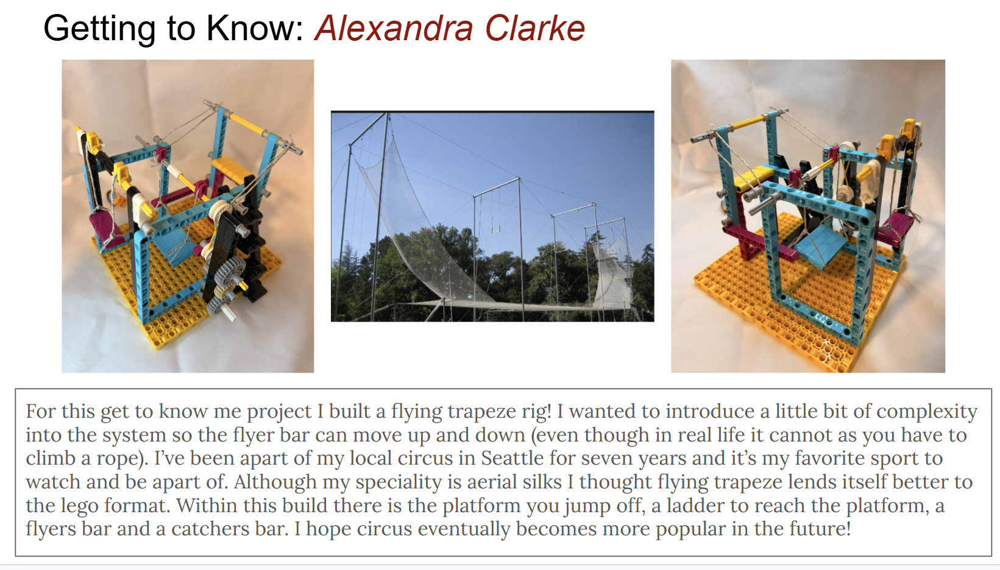

Getting to Know: Alexandra Clarke

For this get to know me project I built a flying trapeze rig. I wanted to introduce a little bit of complexity into the system so the flyer bar can move up and down, even though in real life it cannot as you have to climb a rope. I’ve been a part of my local circus in Seattle for seven years and it’s my favorite sport to watch and be a part of. Although my specialty is aerial silks, I thought flying trapeze lends itself better to the lego format. Within this build there is the platform you jump off, a ladder to reach the platform, a flyers bar and a catchers bar. I hope circus eventually becomes more popular in the future!